Một bài giảng trên nền tảng eLearning (tạm gọi tắt là bài giảng số) bao gồm các thành phần
cơ bản:
Giới thiệu khóa học hay bài giảng: Đặt vấn đề, mô tả mục tiêu, đề cương và hướng
dẫn
học (khai thác) bài giảng.
Nội dung khóa học hay bài giảng: Lý thuyết liên quan, quy trình thực hành và
hướng
dẫn
mẫu quy trình thực hành.
Luyện tập – Vận dụng: Hệ thống câu hỏi ôn tập, bài tập vận dụng và những minh họa
vận
dụng nội dung học tập vào thực tiễn (nếu có).
Kiểm tra – Đánh giá: Hệ thống câu hỏi, bài tập kiểm tra kết quả học tập của học viên
được áp dụng trong bài giảng.
Tương tác giữa nhà giáo và học viên: Học viên phản hồi thông tin liên quan đến
hoạt
động học; nhà giáo phản hồi thông tin, hướng dẫn học tập cho học viên.
Tài liệu tham khảo: Hệ thống tài liệu học tập điện tử (văn bản, hình ảnh và
video)
cung cấp cho học viên tham khảo thêm ngoài bài giảng.
Các tài nguyên (resources) và hoạt động (activities) là hai loại nội dung chính có
thể được phát
triển trong các khóa học hay bài giảng số.
Tài nguyên là những nội dung tĩnh như trang web, liên kết, hình ảnh, tập tin... Tài nguyên được
sử dụng để cung cấp cho học viên những thông tin cần thiết cho nội dung của khóa học hay bài
giảng số.
Hoạt động là các mục tương tác được tạo ra bởi một trong những công cụ Moodle như hoạt động
diễn đàn thảo luận, bài tập,.... Những hoạt động này yêu cầu học viên cung cấp ý kiến của riêng
mình để
tham gia vào quá trình học tập chủ động và độc lập.
Dù phục vụ cho các mục đích khác nhau, các hoạt động và tài nguyên đều được phát triển theo cùng
một cách.
Các hoạt động (activities) và tài nguyên (resources) là linh hồn của một khóa học hay một
bài
giảng số. Để thêm các hoạt động
(activities)
hay tài nguyên (resources), tại mỗi vùng (section) hay chủ đề (topic) của khóa học hay bài
giảng, chúng ta chọn Thêm hoạt động hay tài nguyên:
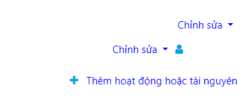
Một cửa sổ Thêm hoạt động hay tài nguyên xuất hiện:
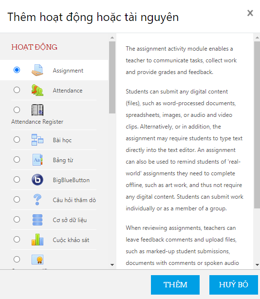
Các hoạt động và tài nguyên có thể được sử dụng một cách linh hoạt giữa các thành phần tùy
theo
mục
đích, phương pháp (giáo án) giảng dạy của nhà giáo.
Assignment (Bài tập) cho phép học viên nộp bài cho nhà giáo để chấm điểm. Công việc có thể là văn
bản được
gõ trực
tuyến hoặc tập tin được tải lên bất kỳ loại nào mà thiết bị của nhà giáo có thể đọc được. Chấm
điểm có
thể là theo tỷ lệ phần trăm đơn giản hoặc theo thang điểm tùy chỉnh, hoặc có thể sử dụng các
tiêu chuẩn
đánh giá phức tạp hơn. học viên có thể nộp bài cá nhân hoặc theo nhóm. Tạo một hoạt động
Assignment (Bài tập) trong Moodle bao gồm một số bước sau đây.
Đăng nhập hệ thống bằng cách truy cập truy cập trang http://elearning.cdktcnnt.edu.vn/
Bật Chế độ Chỉnh sửa bằng cách điều hướng đến khóa học mà nhà giáo muốn thêm hoạt động Assignment
(Bài tập). Ví dụ:
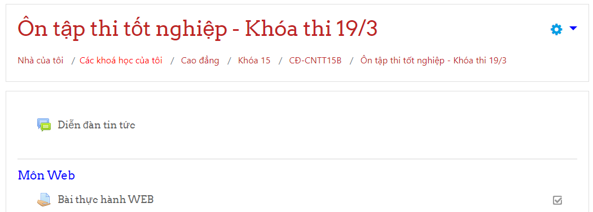
Nhấp vào nút "Bật chế độ chỉnh sửa" (Turn editing on), thường nằm ở góc trên bên phải của trang
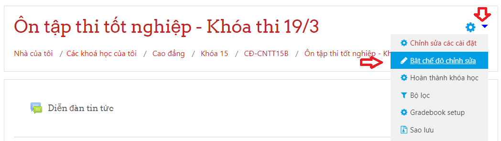
Trong phần của khóa học mà bạn muốn thêm hoạt động Assignment (Bài tập), nhấp vào "Thêm một hoạt
động hoặc tài
nguyên" (Add an activity or resource). Ví dụ thêm vào phần Diễn đàn tin tức
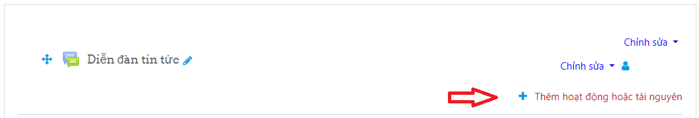
Từ danh sách các hoạt động, chọnAssignment (Bài tập) và nhấp "Thêm" (Add)
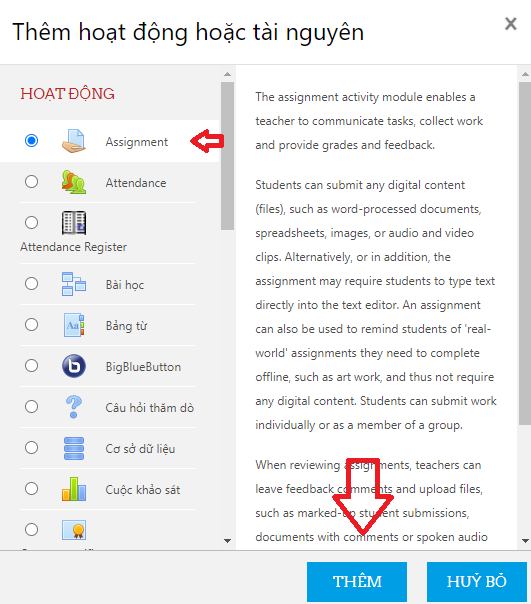
Cấu hình Hoạt động Assignment
Liên quan hoạt động Assignment có một số cài đặt chính cần nhà giáo thực hiện:
Chung: Nhập thông tin Tên bài tập, phần mô tả (Description) (chú ý chọn mục Hiển thị mô tả ở
trang
khóa học nếu muốn hiển thị phần Description) và thêm tập tin đính kèm liên quan đến bài tập tại
Additional files
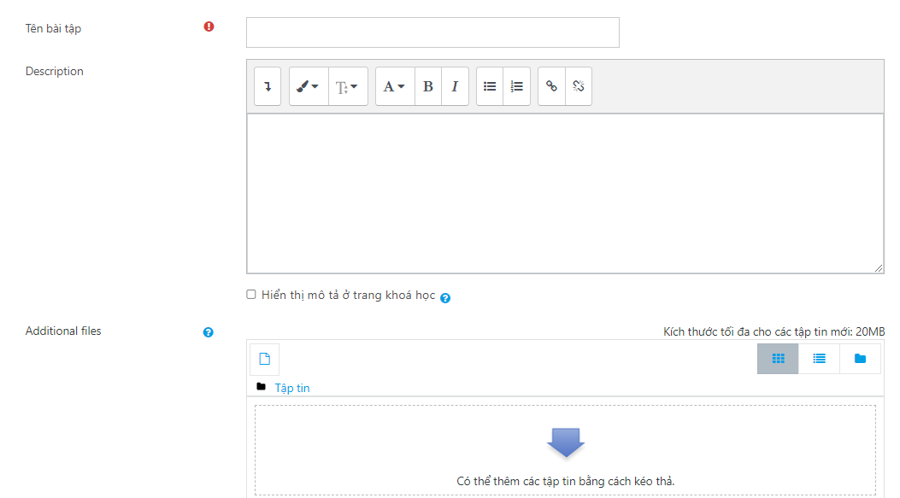
Availability: Thiết lập thời gian bắt đầu nộp bài (Allow submissions from), hạn nộp bài (Due date
(Hạn chót))
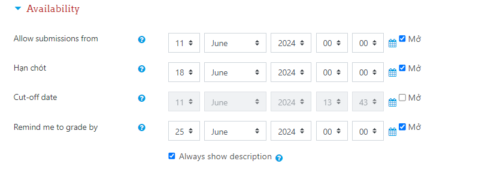
Các mục Cut-off date (Chọn ngày và giờ cuối cùng có thể nộp bài mà không bị tính trễ (nếu có)),
Remind me to grade by (cho phép giáo viên đặt lịch nhắc nhở để chấm điểm bài tập) nhà giáo có
thể
thiết lập hay không tùy ý.
Submission types: Chọn File submissions (Cho phép học viên nộp tập tin (các tập tin tài liệu,
hình
ảnh, v.v.)), hay Online text (Cho phép học viên nhập văn bản trực tiếp vào Moodle). Các tùy chọn
khác
mặc định phụ thuộc vào cài đặt hệ thống của quản trị viên.
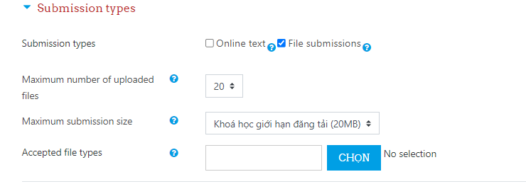
Feedback types: Chọn Feedback comments (Cho phép giáo viên nhập nhận xét trực tiếp vào Moodle),
Feedback files (Cho phép giáo viên tải lên tệp phản hồi), hay Offline grading worksheet (chấm
điểm
và phản hồi ngoại tuyến)
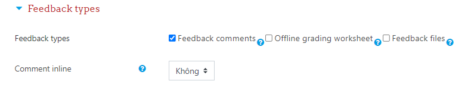
Các mục khác thông thường thiết lập mặc định:
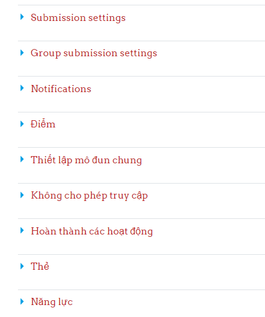
Nhấn LƯU VÀ TRỞ VỀ KHÓA HỌC hay LƯU VÀ CHO XEM.
Hoạt động Attendance (Điểm Danh) được thiết kế để nhà giáo có thể điểm danh trong lớp, và học
viên có thể xem
bản ghi điểm danh của riêng mình.
Nhà giáo có thể đánh dấu trạng thái điểm danh của học viên là "Có mặt" (P), "Vắng mặt" (A), "Đi
muộn" (L)
hoặc "Được phép vắng" (E). Các mô tả trạng thái này có thể được cấu hình, và có thể thêm nhiều
trạng
thái khác. Nhà giáo thêm Điểm danh như một hoạt động của khóa học, sau đó thiết lập các buổi
học mà điểm danh sẽ được theo dõi.
Hoạt động Điểm danh có thể tạo báo cáo cho toàn bộ lớp học hoặc cho từng học viên cá nhân. Học
viên cũng có thể xem bản ghi điểm danh của mình nếu hoạt động này không bị ẩn.
Hoạt động Điểm danh tùy chọn cho phép nhà giáo truy cập nhanh vào chức năng Điểm danh, và cho
phép
học viên truy cập nhanh vào báo cáo tóm tắt về điểm danh của mình.
Tạo một hoạt động Attendance (Điểm danh)
Đăng nhập hệ thống bằng cách truy cập truy cập trang http://elearning.cdktcnnt.edu.vn/
Bật Chế độ Chỉnh sửa bằng cách điều hướng đến khóa học mà nhà giáo muốn thêm hoạt động Attendance
(Điểm danh). Ví dụ:
Nhấp vào nút "Bật chế độ chỉnh sửa" (Turn editing on), thường nằm ở góc trên bên phải của trang
Trong phần của khóa học mà bạn muốn thêm hoạt động điểm danh, nhấp vào "Thêm một hoạt động
hoặc tài nguyên" (Add an activity or resource). Ví dụ thêm vào phần Diễn đàn tin tức
Từ danh sách các hoạt động, chọn "Điểm danh" (Attendance) và nhấp "Thêm" (Add)
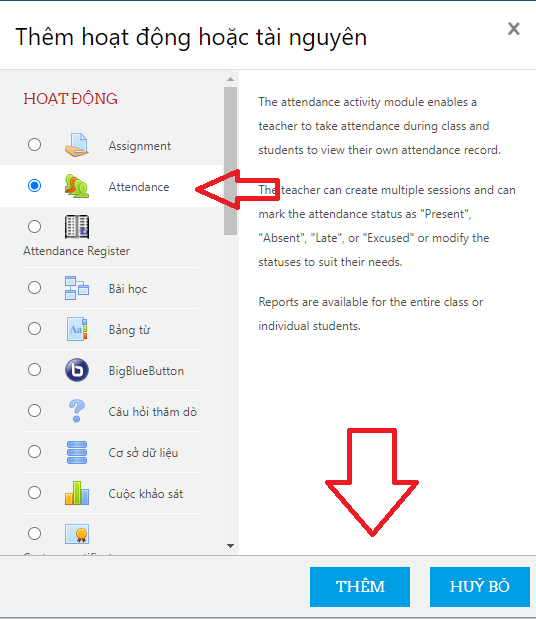
Sẽ xuất hiện giao diện trông như sau:
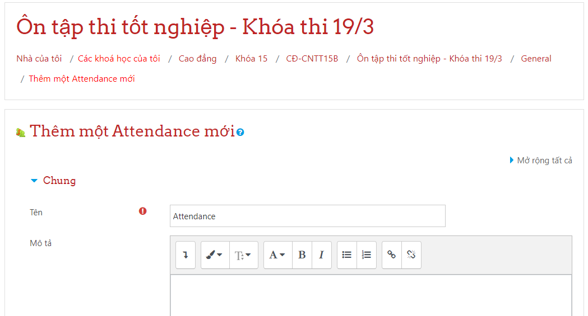
Cấu hình Hoạt động Điểm danh
Cài đặt Chung
Tên: Nhập tên cho hoạt động điểm danh (ví dụ: "Điểm danh tham gia ôn tập").
Mô tả: (Tùy chọn) Thêm mô tả cho hoạt động.
Điểm: (Tùy chọn) Bạn có thể đặt điểm tối đa cho hoạt động này nếu bạn muốn nó góp phần vào
điểm
khóa học.
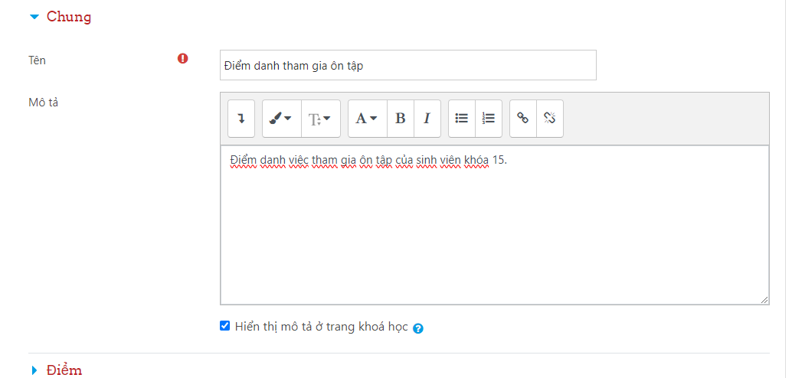
Các cài đặt khác: Thông thường Mặc định.
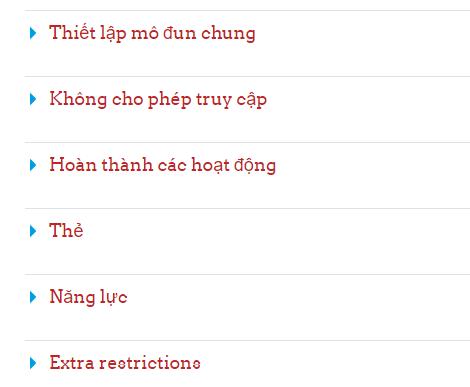
Nhấp vào "Lưu và trở lại khóa học" hoặc "Lưu và hiển thị" để lưu cài đặt của bạn. Ví dụ nếu nhấn
"Lưu và trở lại khóa học" sẽ có giao diện:
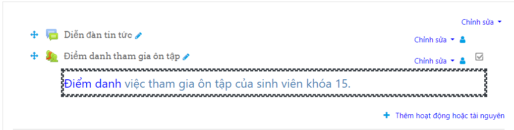
Thiết lập các Phiên Điểm danh
Nhấp vào liên kết hoạt động điểm danh mà bạn vừa tạo
Nhấp vào tab "Thêm phiên" (Add session)
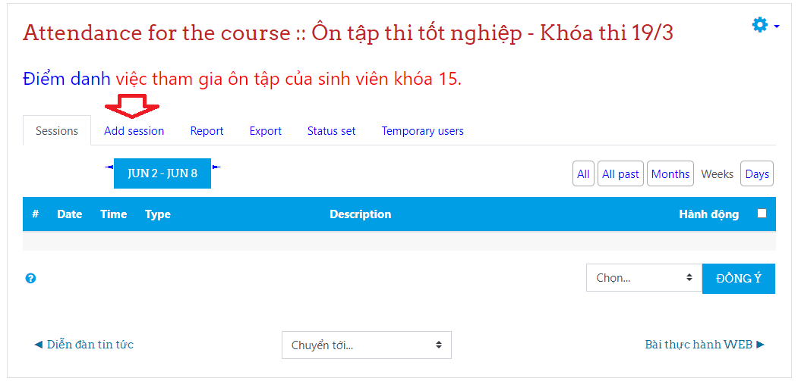
Thêm một phiên (Add session)
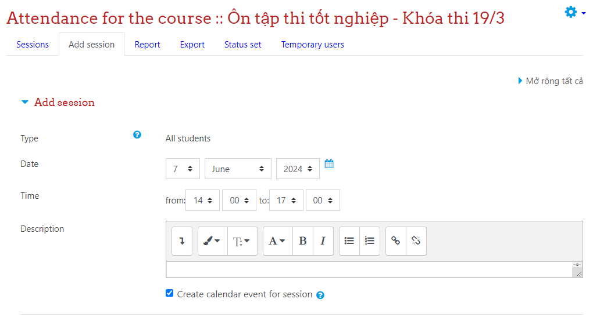
Date, Time: Đặt ngày và giờ cho phiên điểm danh.
Description: (Tùy chọn) Thêm mô tả cho phiên.
Có mục tùy chọn cho nhà giáo khi cài đặt phiên điểm danh là Student recording:
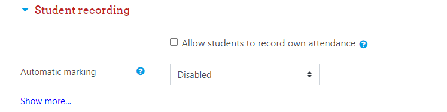
Allow students to record own attendance: Quyết định xem sinh viên có thể tự ghi điểm danh
hay
không.
Automatic marking: Bật nếu muốn điểm danh được đánh dấu tự động.
Lặp lại phiên (Multiple sessions): Được sử dụng lặp lại phiên ở trên. Để bắt đầu, nhà giáo cần
chọn mục Repeat the session above as follows:
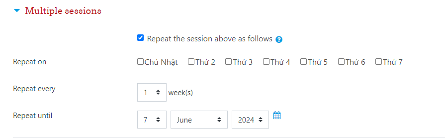
Repeat on: Chọn các ngày trong tuần mà phiên sẽ lặp lại.
Repeat until: Đặt ngày kết thúc cho các phiên lặp lại.
Repeat every: Chọn tần suất các phiên sẽ lặp lại (ví dụ: hàng tuần).
Nhấp vào "Thêm" (Add) để tạo các phiên
Đánh dấu Điểm danh
Điều hướng đến hoạt động điểm danh. Nhấp vào tab "Phiên" (Sessions). Nhấp vào biểu tượng điểm
danh (nút mũi tên Take attendance bên phải)
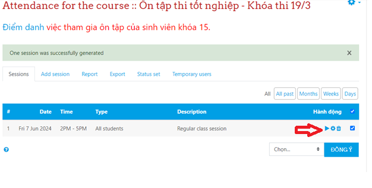
Chọn trạng thái điểm danh cho từng sinh viên (Có mặt (P), Muộn (L), Được phép vắng (E), Vắng (A))
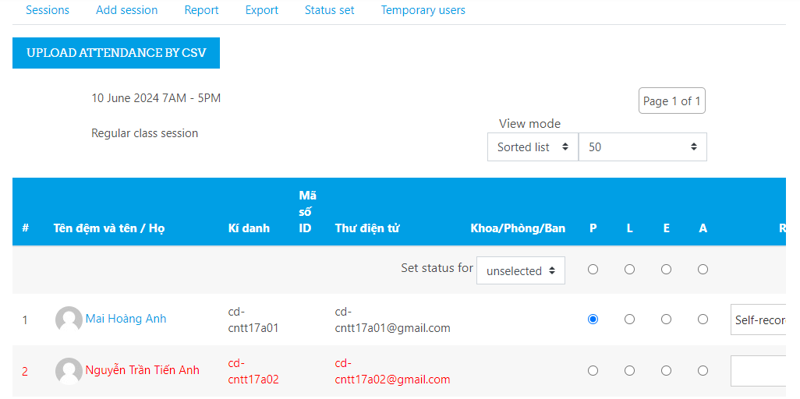
Nhấp vào "Lưu điểm danh" (Save Attendance) khi hoàn tất
Lúc này nút mũi tên (Take attendance) sẽ thay đổi thành nút màu xanh lá (Change attendance)
Xem Báo cáo Điểm danh
Điều hướng đến hoạt động điểm danh, nhấp vào tab "Báo cáo" (Report)
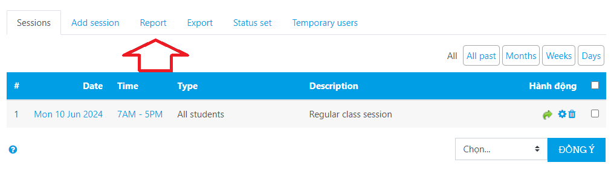
Xem hồ sơ điểm danh cho tất cả các phiên và sinh viên
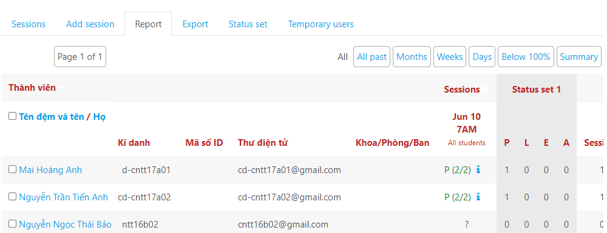
Đây là một mô-đun hoạt động để theo dõi thời gian mà học viên (hoặc người dùng khác) đã tham gia
trong một
khóa học hoặc trong một nhóm các khóa học liên quan.
Hoạt động nhà giáo:
Tạo sổ điểm danh, quản lý danh sách học viên và điểm danh.
Xem báo cáo về sự tham gia và hiệu suất của học viên.
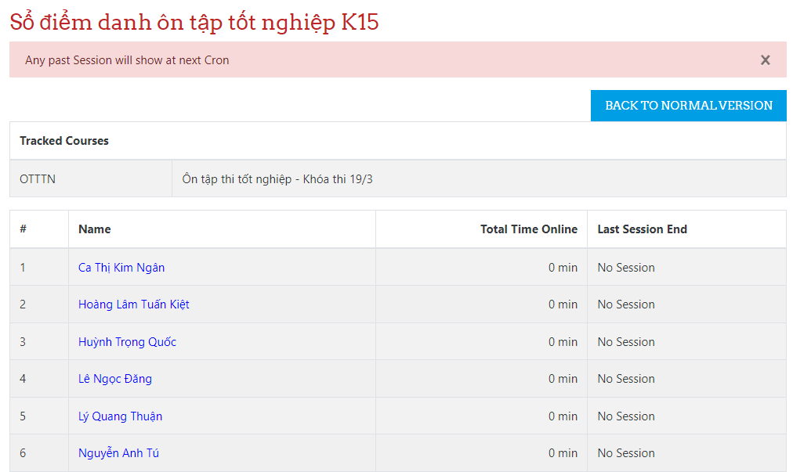
Hoạt động học viên:
Kiểm tra sổ điểm danh và xác nhận sự tham gia của mình.
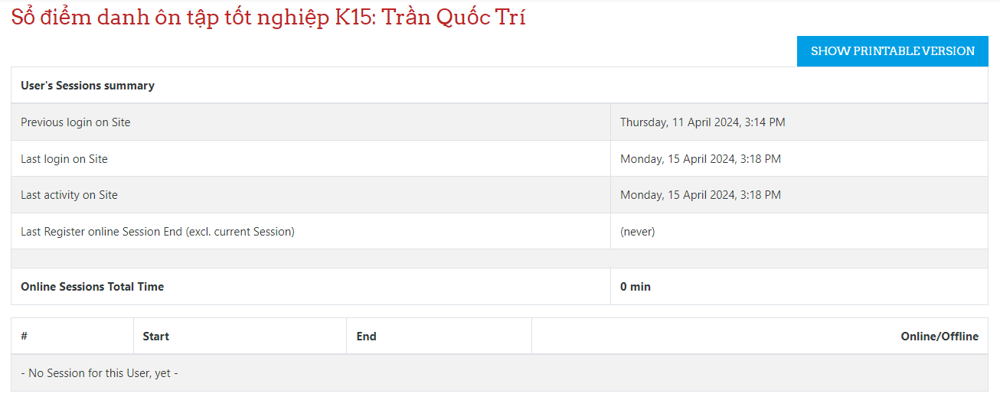
Tìm hiểu thêm về Attendance Register (Sổ Điểm Danh) tại đây.
Hoạt động Lesson (Bài Học) cho phép nhà giáo tạo các bài tập "nhánh" trong đó học viên được trình
bày
với nội
dung và sau đó, tùy thuộc vào phản hồi của họ, được chuyển hướng đến các trang cụ thể. Nội dung
có thể
là văn bản hoặc đa phương tiện. Tạo một hoạt động Lesson (Bài học) trong Moodle bao gồm một số
bước sau đây.
Đăng nhập hệ thống bằng cách truy cập truy cập trang http://elearning.cdktcnnt.edu.vn/
Bật Chế độ Chỉnh sửa bằng cách điều hướng đến khóa học mà nhà giáo muốn thêm hoạt động Lesson
(Bài Học). Ví dụ:
Nhấp vào nút "Bật chế độ chỉnh sửa" (Turn editing on), thường nằm ở góc trên bên phải của trang
Trong phần của khóa học mà bạn muốn thêm hoạt động Lesson (Bài Học), nhấp vào "Thêm một hoạt động
hoặc tài
nguyên" (Add an activity or resource). Ví dụ thêm vào phần Diễn đàn tin tức
Từ danh sách các hoạt động, chọn Lesson (Bài Học) và nhấp "Thêm" (Add)
Cấu hình Hoạt động Lesson (Bài học)
Liên quan hoạt động Lesson (Bài học)có một số cài đặt chính cần nhà giáo thực hiện:
Chung: Nhập thông tin Tên bài học, phần Mô tả (Description) (chú ý chọn mục Hiển thị mô tả ở
trang
khóa học nếu muốn hiển thị phần Description)
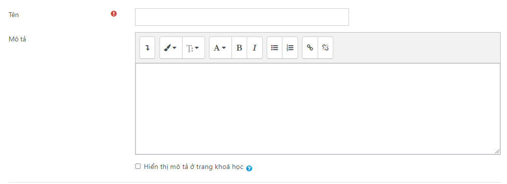
Giao diện: Thông thường mặc định
Hiệu lực: Thiết lập thời gian bắt đầu, thời gian kết thúc hay giới hạn thời gian bài học
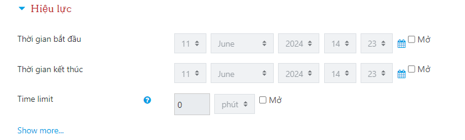
Các mục khác thông thường thiết lập mặc định:
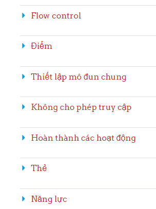
Nhấn LƯU VÀ TRỞ VỀ KHÓA HỌC hay LƯU VÀ CHO XEM.
Thêm Nội Dung Vào Lesson
Sau khi lưu cấu hình Lesson, nhấp vào Lesson vừa tạo
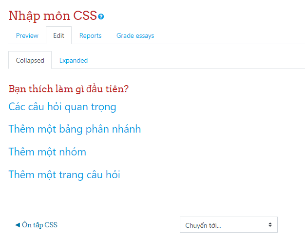
Nhấp vào Edit (Chỉnh sửa) để bắt đầu thêm nội dung. Có thể chọn cách bắt đầu bài học bằng cách
chọn các nội dung:
Các câu hỏi quan trọng (Cluster): cho phép bạn nhóm các câu hỏi lại với nhau. Khi học viên
gặp một
cluster, họ sẽ được chọn ngẫu nhiên từ các câu hỏi trong cluster đó.
Thêm một bảng phân nhánh (Add a Branch Table): Bảng phân nhánh giúp tạo các điểm điều hướng
trong
bài học, cho phép học viên chọn đường đi của họ thông qua các bài học khác nhau dựa trên sự
lựa chọn
của họ.
Thêm một nhóm (Add a Group): Cho phép bạn tổ chức các trang hoặc câu hỏi thành các nhóm để
dễ dàng
quản lý và điều hướng.
Thêm một trang câu hỏi (Add a Question Page): Thêm các trang câu hỏi để kiểm tra kiến thức
của học
viên trong quá trình học bài.
Ví dụ: Chọn Thêm một trang câu hỏi (Add a Question Page) để bắt đầu bài học
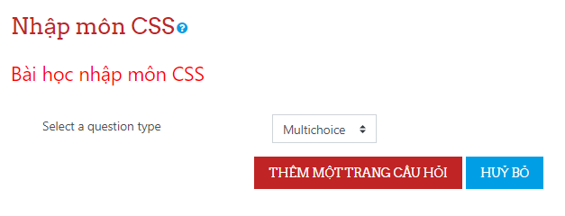
Ở đây chọn các câu hỏi trắc nghiệm nhiều lựa chọn. Nhấn THÊM MỘT TRANG CÂU HỎI.
Nhập thông tin trang và nội dung câu hỏi
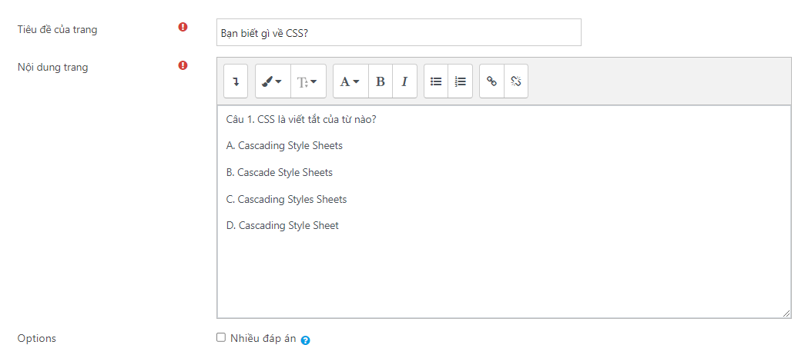
Thiết lập các câu trả lời (mặc định 4) và thông tin phản hồi tương ứng:
Đáp án: Đây là nơi bạn nhập một tùy chọn trả lời cho câu hỏi.
Câu trả lời: Đây là nơi bạn nhập phản hồi sẽ được hiển thị cho học viên nếu họ chọn đáp án
này.
Điểm: Chọn điểm cho Đáp án.
Chuyển: Trang đích nếu học viên trả lời câu hỏi.
Ví dụ: A là đáp án đúng thì định dạng Trả lời 1 như sau:
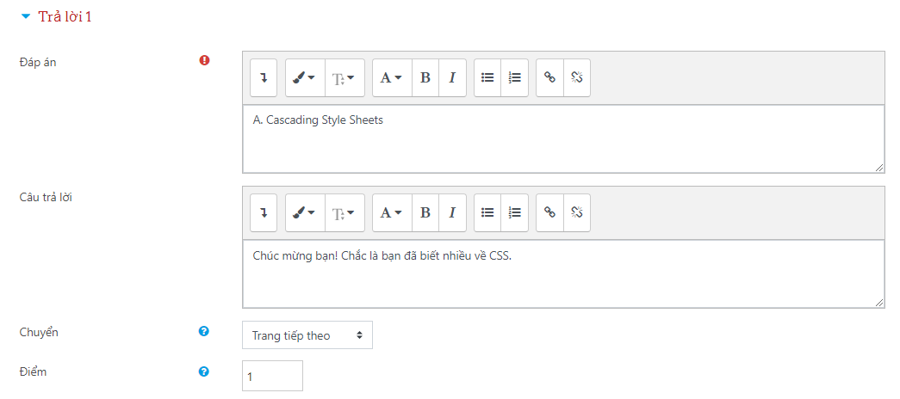
Câu trả lời 2:
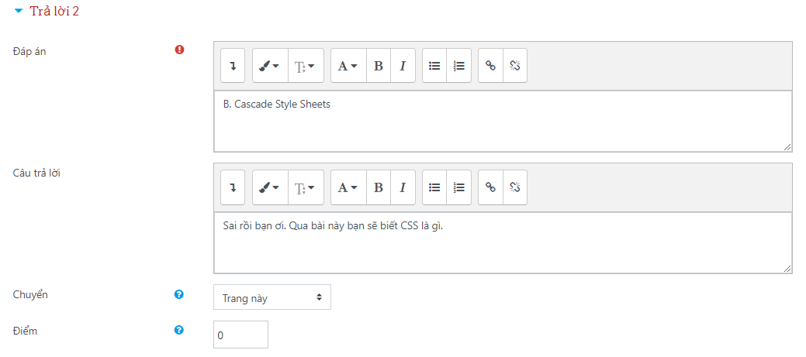
Nhấn vào LƯU TRỮ TRANG hoàn thành phần thiết lập trang
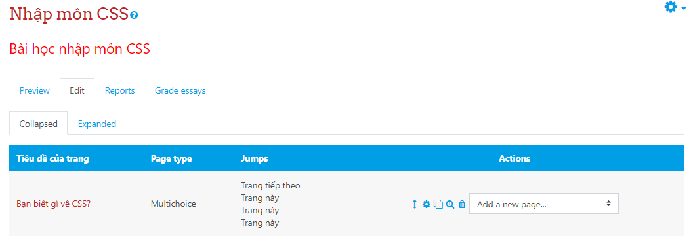
Có thể nhấn vào mục Preview để xem trước:
Chọn B và nhấn SUBMIT
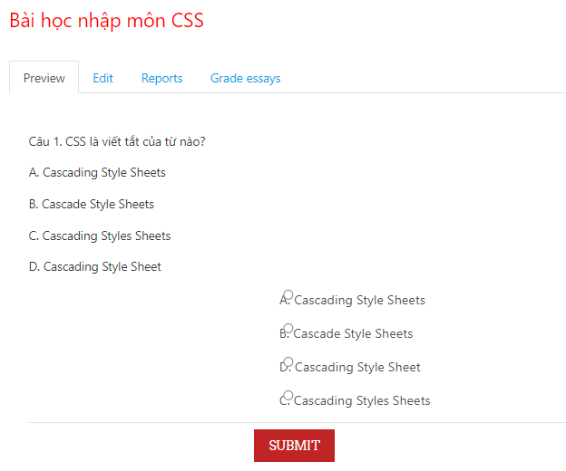
Nhấn TIẾP TỤC và chọn A
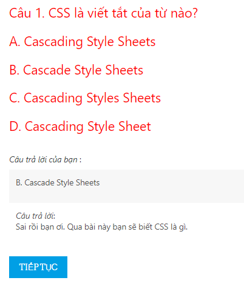
Lần này nhấn TIẾP TỤC sẽ điều hướng đến trang khác của bài học mà bạn đã thiết lập.
Hoạt động Glossary (Bảng Từ) cho phép học viên tham gia tạo và duy trì một danh sách các định
nghĩa, giống như
một từ điển. Mặc dù có thể được thiết lập và sử dụng chỉ bởi nhà giáo, chức năng chính của nó
là như một bài tập cộng tác. Bộ lọc tự động liên kết của Glossary (Bảng Từ) sẽ làm nổi bật bất
kỳ từ nào
trong khóa học được tìm thấy trong Glossary (Bảng Từ).
Hoạt động nhà giáo:
Tạo danh sách từ điển với các thuật ngữ và định nghĩa.
Thúc đẩy sự hiểu biết, cộng tác, tra cứu bảng từ.
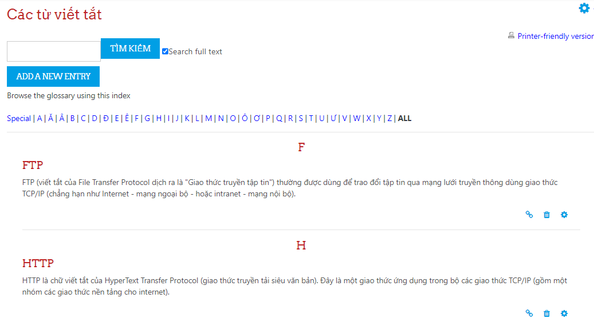
Hoạt động học viên:
Tra cứu, chỉnh sửa (nếu được phép) các thuật ngữ trong bảng từ.
BigBlueButton cho phép nhà giáo tạo liên kết từ bên trong Moodle đến các lớp học trực tuyến thời
gian
thực
bằng cách sử dụng BigBlueButton, một hệ thống hội họp trực tuyến mã nguồn mở dành cho giáo dục
từ xa.
Nhà giáo có thể chỉ định thời gian họp, sau đó thời gian này sẽ được thêm vào lịch và các phiên
có thể được ghi lại để xem sau này.
Hoạt động nhà giáo:
Tạo phòng họp, lên lịch buổi hướng dẫn hoặc thảo luận.
Thực hiện buổi học trực tuyến, chia sẻ màn hình và tương tác với học viên.
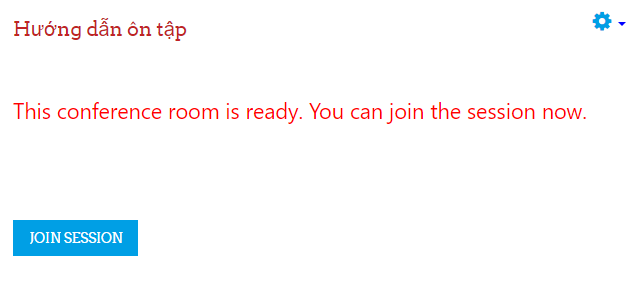
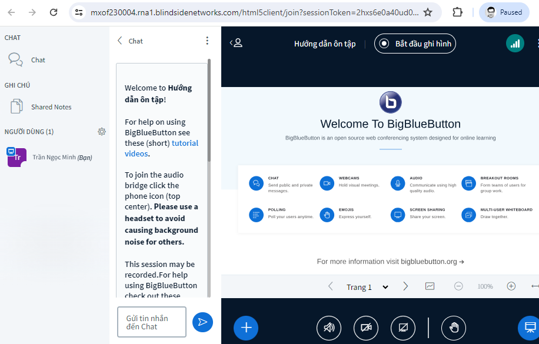
Hoạt động học viên:
Tham gia buổi học trực tuyến, thảo luận và hỏi đáp với nhà giáo.
Hoạt động Choice (Câu Hỏi Thăm Dò) cho phép nhà giáo đặt một câu hỏi và thiết lập các nút radio
mà học viên có thể
nhấp để
chọn từ một số lựa chọn có thể có. Họ có thể chọn một hoặc nhiều tùy chọn và họ có thể cập nhật
lựa chọn
của mình nếu nhà giáo cho phép họ làm điều đó. Choice có thể hữu ích như một cuộc thăm dò nhanh
để
kích
thích suy nghĩ về một chủ đề, để cho lớp bỏ phiếu về định hướng của khóa học, hoặc để đánh giá
tiến
độ.
Hoạt động nhà giáo:
Tạo cuộc thăm dò để thu thập ý kiến hoặc quan điểm của học viên.
Xem kết quả và phản hồi từ cuộc thăm dò.
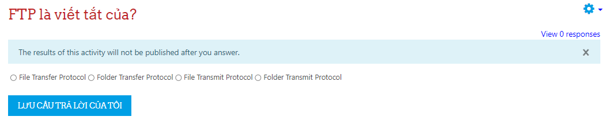
Hoạt động học viên:
Tham gia cuộc thăm dò bằng cách chọn một trong các lựa chọn.
Tìm hiểu thêm về Choice (Câu Hỏi Thăm Dò) tại đây.
Hoạt động Database (Cơ Sở Dữ Liệu) cho phép nhà giáo và/hoặc học viên xây dựng, hiển thị và tìm
kiếm một
ngân hàng
các mục nhập ghi lại về bất kỳ chủ đề nào có thể có. Định dạng và cấu trúc của các mục nhập này
có thể
gần như không giới hạn, bao gồm hình ảnh, tập tin, URL, số và văn bản trong số những điều khác.
Hoạt động nhà giáo:
Tạo cơ sở dữ liệu để chia sẻ tài nguyên và thông tin.
Quản lý và đánh giá các mục trong cơ sở dữ liệu.
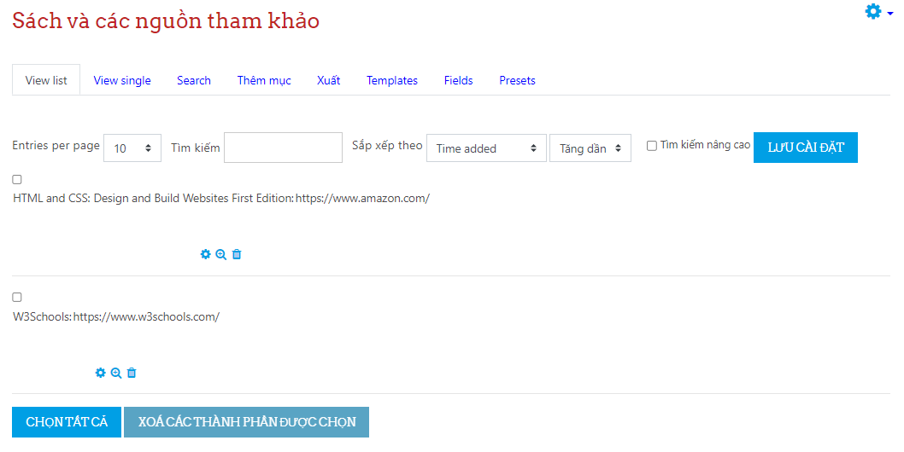
Hoạt động học viên:
Tìm kiếm, xem và đóng góp thông tin vào cơ sở dữ liệu.
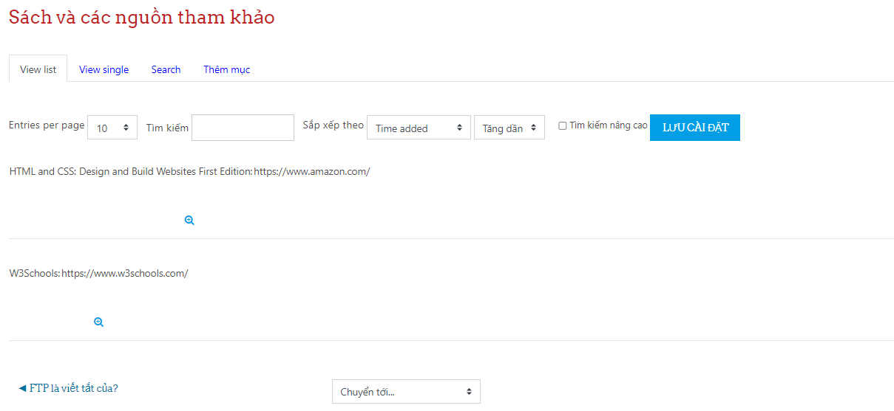
Tìm hiểu thêm về Database (Cơ Sở Dữ Liệu) tại đây.
Hoạt động Survey (Cuộc Khảo Sát) cung cấp một số công cụ khảo sát đã được xác minh, bao gồm
COLLES (Khảo sát
Môi trường
Học tập Trực tuyến Xây dựng) và ATTLS (Khảo sát Thái độ đối với Tư duy và Học tập), được cho là
hữu ích
trong việc đánh giá và kích thích quá trình học tập trong môi trường trực tuyến. Nhà giáo có
thể sử
dụng chúng để thu thập dữ liệu từ học viên, giúp họ hiểu về lớp học và phản
ánh về
việc giảng dạy của mình.
Hoạt động nhà giáo:
Tạo bảng khảo sát để đánh giá ý kiến và hiệu suất của học viên.
Phân tích kết quả và áp dụng cải tiến nếu cần.
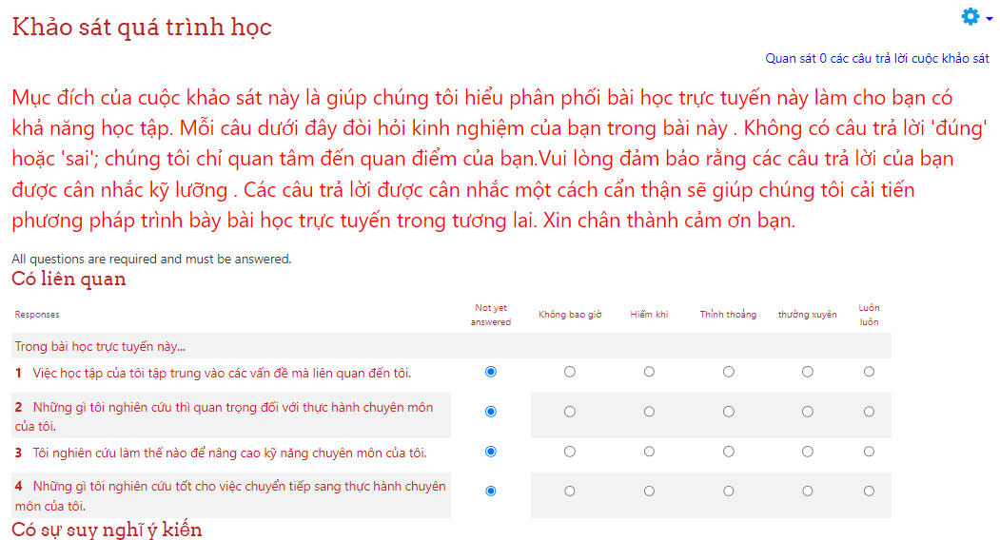
Hoạt động học viên:
Tham gia vào bảng khảo sát và chia sẻ ý kiến cá nhân.
Hoạt động Custom Certificate (Chứng Chỉ Tùy Chỉnh) cho phép tạo ra các chứng chỉ PDF động với
việc tùy chỉnh hoàn toàn
thông qua
trình duyệt web. Điều này khác biệt so với mô-đun chứng chỉ cần truy cập PHP và FTP để tùy chỉnh
giao
diện của nó.
Hoạt động nhà giáo:
Tạo chứng chỉ tùy chỉnh để khen ngợi và thưởng cho thành tích đặc biệt.
Phát chứng chỉ cho Học viên đạt được tiêu chí nhất định.
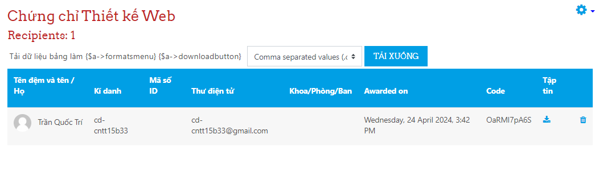
Hoạt động học viên:
Nhận và lưu trữ chứng chỉ điện tử của mình.
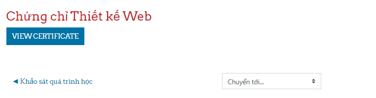
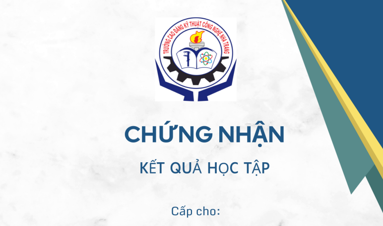
Tìm hiểu thêm về Custom Certificate (Chứng Chỉ Tùy Chỉnh) tại đây.
Hoạt động Forum (Diễn Đàn) cho phép học viên và nhà giáo trao đổi ý kiến bằng cách đăng nhận xét
như
một phần của 'chuỗi thảo luận'. Các tập tin như hình ảnh và phương tiện có thể được bao gồm
trong
các bài đăng trên diễn đàn. Nhà giáo có thể chọn chấm điểm và/hoặc đánh giá các bài đăng trên
diễn đàn và cũng có thể cấp quyền cho học viên đánh giá bài đăng của nhau.
Hoạt động nhà giáo:
Tạo diễn đàn để thảo luận và trao đổi ý kiến.
Tham gia vào các cuộc thảo luận và cung cấp hướng dẫn.
Hoạt động học viên:
Đăng bài, tham gia vào cuộc thảo luận và tương tác với nhà giáo bè hay nhà giáo.
Moodle hỗ trợ nhiều loại câu hỏi khác nhau cho hoạt động Quiz, giúp nhà giáo có thể đánh giá kiến
thức của học viên một cách đa dạng và linh hoạt. Hướng dẫn sau đây sẽ giúp nhà giáo tạo một hoạt
động Quiz với các câu hỏi trắc nghiệm nhiều lựa chọn từ ngân hàng các câu hỏi.
Tạo một hoạt động Quiz (Đề thi) trong Moodle bao gồm một số bước:
Đăng nhập hệ thống bằng cách truy cập truy cập trang http://elearning.cdktcnnt.edu.vn/
Bật Chế độ Chỉnh sửa bằng cách điều hướng đến khóa học mà nhà giáo muốn thêm hoạt động Quiz (Đề
thi). Ví dụ:
Nhấp vào nút "Bật chế độ chỉnh sửa" (Turn editing on), thường nằm ở góc trên bên phải của trang
Trong phần của khóa học mà bạn muốn thêm hoạt động Quiz, nhấp vào "Thêm một hoạt động hoặc tài
nguyên" (Add an activity or resource). Ví dụ thêm vào phần Diễn đàn tin tức
Từ danh sách các hoạt động, chọn Quiz (Đề thi) và nhấp "Thêm" (Add)
Cấu hình Hoạt động Quiz
Liên quan hoạt động Quiz có một số cài đặt chính cần nhà giáo thực hiện:
Chung: Nhập thông tin Tên (Name) cho bài Quiz, phần Nội dung (Description) (chú ý chọn mục Hiển
thị
mô tả ở trang khóa học nếu muốn hiển thị phần Nội dung)
Timing: Thời gian bắt đầu và kết thúc truy cập đề thi
Điểm: Cho phép thiết lập điểm tối thiểu để đạt bài Quiz và số lần làm bài. Ví dụ điểm tối thiểu
để
đạt là 5 và số lần thử là 2:
Các tùy chọn khác thông thường thiết lập mặc định, bao gồm:
Nhấn Lưu và trở về khóa học hay Lưu và cho xem
Nhấn nút Chỉnh sửa đề thi
Chọn Add > from question bank để thêm đề thi từ ngân hàng câu hỏi nhà giáo đã chuẩn bị sẵn. Nếu
ngân
hàng câu hỏi đã được nạp trước sẽ xuất hiện giao diện với các câu hỏi như sau:
Chọn các câu hỏi cần đưa vào Quiz
và nhấn nút ADD SELECTED QUESTIONS TO THE QUIZ
Như vậy chúng ta đã tạo xong Quiz. Trở lại Quiz đã tạo
Nhấn nút PREVIEW QUIZ NOW
Nhấn nút START ATTEMPT để bắt đầu làm bài
Tạo một ngân hàng câu hỏi trắc nghiệm nhiều lựa chọn
Mở trình soạn thảo, ví dụ Notepad, và nhập các câu hỏi theo định dạng:
Lặp lại định dạng này cho tất cả các câu hỏi tiếp theo, chú ý rằng:
Mỗi câu hỏi bắt đầu với "Câu [số]." (hoặc "Question [number]." nếu bạn dùng tiếng Anh).
Mỗi đáp án bắt đầu với "A.", "B.", "C.", "D.".
Đáp án đúng được chỉ định bằng "ANSWER: [chữ cái]".
Lưu tập tin câu hỏi với các tùy chọn như hình:
Trong khóa học của bạn, chọn "More" (Khác) trên thanh điều hướng
Chọn "Question bank" (Ngân hàng câu hỏi), nhấp vào "Import" (Nhập)
Chọn Aiken format (hoặc định dạng khác mà bạn đã sử dụng)
Nhấn Choose a file... (Chọn một tập tin) và tải lên file ngân hàng câu hỏi vừa tạo và nhấp vào
mục
Nhập dữ liệu
Kiểm tra lại các câu hỏi đã nhập để đảm bảo chúng hiển thị đúng cách và đáp án đúng được đánh dấu
chính xác.
Hoạt động External tool (Công Cụ Bên Ngoài) là các ứng dụng bổ sung nhà giáo có thể tích hợp vào
khóa
học của mình, chẳng
hạn như nội dung tương tác, hoạt động hoặc đánh giá. Nhà giáo có thể liên kết đến các hoạt động
này từ trang khóa học Moodle của mình, và học viên có thể truy cập chúng mà không cần rời khỏi
khóa học Moodle hoặc đăng nhập vào một hệ thống khác. Nếu có sẵn và tùy thuộc vào từng công cụ,
học viên cũng có thể nhận được điểm số gửi lại vào Moodle.
Liên kết giữa Moodle và các công cụ này được thực hiện thông qua tiêu chuẩn Khả năng Tương tác
Công cụ Học tập (LTI - Learning Tools Interoperability), giúp tích hợp các nền tảng học tập với
các công cụ học tập để tạo ra một
trải nghiệm học tập phong phú và liền mạch hơn. Về cơ bản, tiêu chuẩn LTI cho phép trao đổi
thông tin an toàn, hai chiều giữa Moodle và các công cụ học tập bên ngoài.
Các công cụ bên ngoài LTI có thể được sử dụng trong Moodle như các hoạt động.
Hoạt động nhà giáo:
Tích hợp công cụ và tài nguyên từ các nguồn bên ngoài.
Hướng dẫn Học viên sử dụng công cụ tích hợp.
Hoạt động học viên:
Truy cập và sử dụng các công cụ tích hợp từ Moodle.
Tìm hiểu thêm về External tool (Công Cụ Bên Ngoài) tại đây.
Hoạt động Feedback (Phản Hồi) cho phép nhà giáo tạo và thực hiện các cuộc khảo sát để thu thập
phản hồi. Không
giống như công cụ Survey (Cuộc Khảo Sát), nó cho phép nhà giáo tự viết câu hỏi của mình, thay vì
chọn từ danh sách
các câu hỏi đã viết sẵn và không giống như công cụ Quiz (Đề Thi), nhà giáo có thể tạo các câu
hỏi không
được chấm điểm. Hoạt động PFeedback (Phản Hồi) lý tưởng cho việc đánh giá khóa học hoặc nhà
giáo.
Hoạt động nhà giáo:
Tạo biểu mẫu phản hồi để thu thập ý kiến và góp ý từ Học viên.
Xem và phản hồi trực tiếp trên ý kiến của Học viên.
Hoạt động học viên:
Điền vào biểu mẫu phản hồi và gửi ý kiến cho nhà giáo.
Hoạt động SCORM cho phép nhà giáo tải lên bất kỳ gói SCORM hoặc AICC nào vào một khóa học. SCORM
(Mô hình Tham chiếu Đối tượng Nội dung Có thể Chia sẻ) là một tập hợp các quy định cho
phép khả năng tương tác, khả năng truy cập và tái sử dụng nội dung học tập trên web.
Hoạt động nhà giáo:
Tích hợp nội dung SCORM từ các nguồn khác nhau.
Đánh giá và theo dõi tiến triển của Học viên trong nội dung SCORM.
Hoạt động học viên:
Truy cập nội dung SCORM từ Moodle và tham gia vào các hoạt động.
H5P là viết tắt của HTML5 Package. Nó cho phép các nhà giáo tạo nội dung như video tương tác,
câu đố và bài thuyết trình. Nội dung H5P có thể được tạo trong Ngân hàng nội dung hoặc trên
trang web h5p.com, hoặc bằng ứng dụng LUMI cho máy tính để bàn, và thêm vào khóa học
dưới dạng hoạt động H5P hoặc nhúng vào bất kỳ hoạt động hoặc tài nguyên nào khác.
Đối với đánh giá tổng kết, chẳng hạn như các kỳ thi, vì lý do bảo mật, nên sử dụng hoạt động
Quiz (Đề Thi) thay vì H5P.
Đăng nhập hệ thống bằng cách truy cập truy cập trang http://elearning.cdktcnnt.edu.vn/
Bật Chế độ Chỉnh sửa bằng cách điều hướng đến khóa học mà nhà giáo muốn thêm hoạt động H5P. Ví
dụ:
Nhấp vào nút "Bật chế độ chỉnh sửa" (Turn editing on), thường nằm ở góc trên bên phải của trang
Trong phần của khóa học mà bạn muốn thêm hoạt động H5P, nhấp vào "Thêm một hoạt động hoặc tài
nguyên" (Add an activity or resource). Ví dụ thêm vào phần Diễn đàn tin tức
Từ danh sách các hoạt động, chọn H5P và nhấp "Thêm" (Add)
Cấu hình Hoạt động H5P
Liên quan hoạt động H5P có một số cài đặt chính cần nhà giáo thực hiện:
Mô tả: Nhập thông tin về nội dung tương tác
Editor: H5P cho phép tạo nội dung tương tác phong phú như video tương tác, câu hỏi trắc nghiệm,
slide,...
Phần này sẽ hướng dẫn các bước tạo một video tương tác (Interactive Video)
Nhập tiêu đề (Title) cho video với các mục đích:
Dễ dàng nhận diện: Tiêu đề giúp giáo viên và học viên dễ dàng nhận diện nội dung video tương
tác.
Tìm kiếm và báo cáo: Giúp quản trị viên, giáo viên và học viên dễ dàng tìm kiếm và theo dõi
nội
dung thông qua các công cụ tìm kiếm và báo cáo của Moodle.
Bản quyền thông tin: Giúp quản lý thông tin về bản quyền, nếu có.
Bước kế tiếp là tải hay nhúng video (Upload/embed video) bằng cách nhấn vào dấu +:
Sẽ xuất hiện cửa sổ cho phép tải lên video (Upload video file) hay nhúng video từ nguồn bên ngoài
hệ
thống eLearning (Paste Youtube link or other video source URL)
Ví dụ nhúng một video từ Youtube:
Nhấn Insert. Kế tiếp chọn tab Add interactions
Kết quả là một giao diện trông như sau:
Như thông báo từ hộp thoại Adding interactions, tại bước này nhà giáo có thể tạo tính tương tác
bằng
cách thêm một thành phần (element) bất kỳ trên thanh công cụ (toolbar) bằng cách kéo (drag) và
thả
(drop) tại một vị trí trên video. Nhấn Next để tiếp tục xem các gợi ý hoặc nhấn Exit để thoát.
Giả sử trước khi xem video, nhà giáo có thể thêm một câu hỏi trắc nghiệm để dẫn dắt học viên. Để
thực hiện, nhà giáo chọn Multiple Choice
Xuất hiện giao diện cho phép tạo câu hỏi trắc nghiệm với nhiều câu trả lời:
Các thông tin cần chú ý:
Display time: Khoảng thời gian trên video sẽ xuất hiện câu hỏi. Nếu để mặc định như hình
trên thì
câu hỏi sẽ xuất hiện từ phút 0:00 đến 0:10, tức xuất hiện trong vòng 10 giây đầu tiên.
Pause video: Nếu chọn mục này, video sẽ tạm dừng trong thời gian xuất hiện câu hỏi.
Display as: Hình thức xuất hiện của câu hỏi là Button hay Poster. Mặc định dạng Button.
Label: Thêm một thông tin mô tả đến câu hỏi.
Title: Tiêu đề câu hỏi giúp tìm kiếm, hỗ trợ thông tin báo cáo hay bản quyền.
Media: Có thể thêm hình ảnh hay video, tuy nhiên chỉ thật cần thiết mới chọn mục này vì nếu
thêm
có thể làm rối người học.
Kéo xuống phía dưới, chúng ta sẽ làm quen giao diện cho phép chúng ta nhập thông tin về câu hỏi.
Ví
dụ chúng ta muốn thêm câu hỏi và các đáp án lựa chọn sau đây:
Các bước để thêm:
Question: Nhập câu hỏi (CSS là viết tắt của từ nào?)
Option: Mỗi Option là một đáp án. Mặc định có 2 Option. Nhà giáo có thể thêm các Option bằng
cách
nhấn nút ADD OPTION. Ví dụ trên có 4 đáp án nên chúng ta cần 4 Option. Ví dụ Option đầu
tiên:
Text: Nhập đáp án thứ nhất
Correct: Chọn nếu đáp án thứ nhất là đáp án đúng
Tips anh feedback: Cho phép hiển thị gợi ý trả lời (Tip text) hay xuất hiện thông
báo nếu đáp
án
được chọn (Message displayed if answer is selected) hay không được chọn (Message
displayed if
answer
is not selected). Hình ảnh minh họa
Hình ảnh minh họa cho đáp án B
Do mặc định chỉ có 2 Option nên chúng ta thêm 2 Option cho C và D bằng cách nhấn nút ADD OPTION.
Thiết lập C, D tương tự B
Nếu hoàn thành chúng ta sẽ có giao diện:
3 mục kế tiếp thông thường để chế độ mặc định
Nhấn nút Done để hoàn thành quá trình thêm câu hỏi đến video
Như vậy chúng ta đã hoàn thành bước 2 của quá trình cài đặt nội dung tương tác cho video. Bước
cuối
cùng là Summary Task.
Mục Đích của Summary Task
Tổng kết: Cung cấp một tóm tắt ngắn gọn về các nội dung chính đã được đề cập trong video.
Đánh giá: Kiểm tra kiến thức và sự hiểu biết của học viên về nội dung đã học thông qua các
câu hỏi
hoặc tuyên bố.
Củng cố kiến thức: Giúp học viên ôn lại và củng cố những điểm chính trước khi kết thúc bài
học.
Thiết lập cho bước Summary Task:
Title: Thông tin hỗ trợ tìm kiếm, báo cáo hay bản quyền
Introduction Text: Cung cấp một phần giới thiệu ngắn gọn về nội dung sẽ được tóm tắt trong
phần
Summary task.
Summary: Bao gồm các Statement (phát biểu) – Là tóm tắt về nội dung đã học. Học viên sẽ đánh giá
những phát biểu này là đúng hay sai. Mặc định có 2 Statement và statement đầu tiên là phát biểu
đúng. Nhà giáo có thể thêm Statement bằng cách nhấn ADD STATEMENTS. Ví dụ nhập 2 phát biểu sau
để
học viên chọn:
Các nội dung còn lại nhà giáo có thể để chế độ mặc định.
Các tùy chọn còn lại của hoạt động H5P nhà giáo cũng để chế độ mặc định. Nhấn LƯU VÀ TRỞ VỀ KHÓA
HỌC
hay LƯU VÀ CHO XEM.
Giao diện video
Nhấn chọn nút tròn sẽ xuất hiện câu hỏi
Chọn B (đáp án sai) và nhấn nút Check
Nhấn nút tròn xanh giữa để làm lại. Chọn A
Nhấn Continue để tiếp tục xem video. Trước khi kết thúc video (khoảng 3 giây theo cài đặt mặc
định)
sẽ xuất hiện phần tóm tắt
Chọn Open summary dialog
Chọn phát biểu 2:
Kết thúc video
Học viên nhấn Submit Answers để gửi câu trả lời đến nhà giáo.
Jitsi cho phép tạo các phiên hội nghị video jitsi-meet tích hợp hoàn toàn trong Moodle. Các
hội nghị video này sẽ sử dụng tên người dùng Moodle của nhà giáo bằng cách hiển thị tên người
dùng và
ảnh đại diện của nhà giáo trong hội nghị video.
Jitsi-meet là một giải pháp hội nghị video mã nguồn mở cho phép nhà giáo dễ dàng xây dựng và
triển
khai các giải pháp hội nghị video bảo mật.
Dù nhà giáo sử dụng máy chủ công cộng được cung cấp bởi Jitsi (meet.jit.si) hay sử dụng máy chủ
hội
nghị video Jitsi của riêng mình, với plugin này, nhà giáo có thể tạo các phiên hội nghị video
trong
các khóa học Moodle của mình một cách đơn giản: chỉ cần cấu hình tên miền của máy chủ Jitsi và
sau đó, trong khóa học, tạo một hoạt động Jitsi mới.
Hoạt động này cũng cho phép sử dụng các token để cấp quyền điều phối cho các vai trò mà nhà giáo
muốn
bằng cách sử dụng khả năng mod/jitsi:moderation. (Để sử dụng tùy chọn này, cần phải có máy chủ
Jitsi riêng của nhà giáo với cấu hình token).
Lên lịch các cuộc họp video của nhà giáo và làm cho chúng có thể truy cập được vào thời gian nhà
giáo
muốn. Ngoài ra, phiên họp sẽ được hiển thị trong lịch Moodle.
Jitsi cho phép ghi âm hội nghị video, truyền trực tiếp lên YouTube, chia sẻ màn hình, hiển thị
toàn màn hình, hiển thị thống kê, cùng với nhiều tính năng khác và tất cả các tùy chọn này đều
hoàn toàn tương thích với mô-đun này.
Thông tin thêm về hội nghị video của Jitsi: jitsi.org
Hoạt động nhà giáo:
Tạo phòng họp Jitsi để thực hiện buổi hướng dẫn hoặc thảo luận.
Sử dụng tính năng video, âm thanh và chia sẻ màn hình.
Hoạt động học viên:
Tham gia vào phòng họp và tương tác với nhà giáo, bạn bè.
Hoạt động Chat (Phòng Họp Trực Tuyến) cho phép những học viên có thể thảo luận đồng bộ theo thời
gian
thực trong một khóa học Moodle. Các chủ đề khác nhau có thể được sử dụng (tuy nhiên lưu ý rằng
bạn sẽ mất chuỗi hội thoại nếu thay đổi chủ đề trong khi trò chuyện) và có một giao diện dễ tiếp
cận.
Hoạt động nhà giáo:
Tạo phòng trò chuyện để giao tiếp và hỗ trợ Học viên.
Tham gia vào các cuộc trò chuyện và giải đáp thắc mắc.
Hoạt động học viên:
Tham gia vào phòng trò chuyện để thảo luận và trao đổi thông tin.
Tìm hiểu thêm về Chat (Phòng Họp Trực Tuyến) tại đây.
Hoạt động Workshop (Tập Huấn) là một công cụ đánh giá đồng đẳng mạnh mẽ. Học viên nộp bài và sau
đó các bài
này được phân phối cho các bạn cùng lớp để đánh giá dựa trên thang điểm do nhà giáo quy định.
Hoạt động nhà giáo:
Tạo buổi workshop để học viên gửi và đánh giá công việc của bạn cùng khóa học.
Cung cấp phản hồi và theo dõi sự tham gia của học viên.
Hoạt động học viên:
Tham gia workshop, gửi và đánh giá công việc của nhà giáo.
Hoạt động Wiki cho phép học viên tạo ra một tài liệu cộng tác bằng cách cùng nhau xây dựng các
trang, tương tự như Wikipedia. Không giống như các chương trình chỉnh sửa cộng tác khác (như
Google Docs), Wiki là một hoạt động tiêu chuẩn trong Moodle nên không cần thêm quyền hoặc đăng
nhập khác.
Mặc dù Wikis thường là công cụ cộng tác, nhưng cũng có thể cho phép mỗi học viên tạo Wiki riêng
cho mục đích cá nhân.
Hoạt động nhà giáo:
Tạo trang wiki để học viên thêm nội dung và chia sẻ thông tin.
Theo dõi và đánh giá sự đóng góp của học viên.
Hoạt động học viên:
Thêm nội dung và sửa đổi trang wiki để chia sẻ kiến thức.
Zoom là dịch vụ hội nghị video dựa trên web và ứng dụng (http://zoom.us). Plugin này cung cấp sự
tích hợp chặt chẽ với Moodle, hỗ trợ tạo cuộc họp, đồng bộ hóa, chấm điểm, và sao lưu/khôi phục.
Hoạt động nhà giáo:
Tạo phòng họp Zoom để thực hiện buổi hướng dẫn hoặc thảo luận.
Sử dụng tính năng video, âm thanh và chia sẻ màn hình.
Hoạt động học viên:
Tham gia vào phòng họp Zoom từ Moodle và tương tác với nhà giáo.
Tài nguyên Book cho phép nhà giáo tạo ra các tài liệu nhiều trang với định dạng giống sách và có
mục lục.
Nội dung đa phương tiện có thể được nhúng vào và sách có thể được in toàn bộ hoặc theo từng
chương.
Hoạt động nhà giáo:
Tạo sách điện tử với các phần và nội dung cần thiết.
Xem kết quả và tiến triển của học viên trong việc đọc sách.
Hoạt động học viên:
Đọc và tương tác với các phần khác nhau trong sách điện tử.
Tài nguyên File không chỉ là các tài liệu soạn thảo văn bản hay các bài thuyết trình dạng trình
chiếu.
Mọi loại tập tin đều có thể được tải lên và truy cập thông qua Moodle, nhưng học viên cần phải
có
phần mềm phù hợp để có thể mở chúng. Các loại tập tin khác nhau được hiển thị với các biểu tượng
khác nhau. Tập tin có thể được thêm vào theo hai cách: chúng có thể được kéo và thả trực tiếp
lên
trang khóa học.
Ngoài ra, chúng có thể được thêm vào bằng cách nhấp vào File từ bộ chọn hoạt động
Tài nguyên Folder cho phép nhà giáo hiển thị nhiều tập tin khóa học cùng nhau. Các tập tin có thể
thuộc
các loại
khác nhau và có thể được tải lên cùng một lúc dưới dạng thư mục nén sau đó được giải nén, hoặc
chúng có thể được thêm từng tập tin một vào thư mục trống trên trang khóa học.
Lưu ý rằng trong Moodle LMS, thư mục chỉ có thể được sử dụng để thu thập và hiển thị tập tin,
không
phải các tài nguyên hoặc hoạt động khác, khác với cách sử dụng thuật ngữ 'thư mục' trong các nền
tảng học tập khác.
Hoạt động nhà giáo:
Nhà giáo sẽ thấy nút Chỉnh sửa (Edit) khi truy cập vào thư mục, cho phép họ tải lên,
chỉnh sửa
hoặc xóa các tệp tin.
Hoạt động học viên:
Tùy thuộc vào cách nhà giáo cấu hình thư mục, học viên sẽ nhấp vào thư mục để xem các
tập tin hoặc chúng sẽ được hiển thị trên trang khóa học. Nếu nhà giáo bao gồm nút Tải
xuống (Download), học viên sẽ thấy nút này như trong ảnh chụp màn hình
Google Meet cho phép nhà giáo tạo một phòng Google Meet và cung cấp cho học
viên các bản ghi của phòng được lưu trên Google Drive mà không cần phải rời khỏi Moodle.
Hoạt động nhà giáo:
Tạo phòng họp Google Meet để thực hiện buổi hướng dẫn hoặc thảo luận.
Sử dụng tính năng video, âm thanh và chia sẻ màn hình.
Hoạt động học viên:
Tham gia vào phòng họp Google Meet từ Moodle và tương tác với nhà giáo.
IMS content package là nội dung giúp xác định các tiêu chuẩn kỹ thuật cho nhiều lĩnh vực, bao gồm
cả tài liệu
e-learning. Đặc tả Gói Nội dung IMS (IMS Content Package) cho phép lưu trữ các phần tài liệu
theo định dạng tiêu chuẩn, có thể tái sử dụng trong các hệ thống khác nhau mà không cần phải
chuyển đổi tài liệu sang các định dạng mới.
Gói nội dung IMS trong Moodle cho phép tải lên và bao gồm các gói nội dung này trong các khóa
học Moodle. Có nhiều tùy chọn để hiển thị nội dung với menu điều hướng hoặc các nút, v.v. như
hình minh họa sau:
Hoạt động nhà giáo:
Truy cập và tương tác với nội dung IMS tích hợp từ Moodle.
Hoạt động học viên:
Truy cập và tương tác với nội dung IMS tích hợp từ Moodle.
Label (còn được biết đến Text and media area) đóng vai trò như một khoảng cách
trên trang bài giảng hay khóa học. Nó có thể được sử dụng để thêm văn bản, hình ảnh, đa phương
tiện
hoặc mã vào giữa các tài nguyên khác nhau trong các phần khác nhau. Đây là một tài nguyên rất
linh hoạt và có thể giúp cải thiện giao diện của khóa học nếu được sử dụng một cách cẩn thận.
Biểu ngữ hoặc mô tả có thể được thêm vào đây để phân biệt và làm nổi bật các khu vực khác nhau.
(Lưu ý rằng việc sử dụng quá nhiều đa phương tiện (âm thanh, video) trong các khu vực Văn bản và
phương tiện có thể làm chậm tốc độ tải trang khóa học.)
Hoạt động nhà giáo:
Tổ chức và chia sẻ nội dung.
Hoạt động học viên:
Những gì học viên thấy Label phụ thuộc vào cách nhà giáo đã cấu hình nó. Các khu vực
Label hiển thị như một phần của trang
khóa học, vì vậy không có biểu tượng để nhấp vào.
Tài nguyên Page (trang nội dung) tạo một liên kết đến một màn hình hiển thị nội dung được tạo bởi
nhà giáo.
Trình soạn thảo văn bản cho phép trang hiển thị nhiều loại nội dung khác nhau như văn bản thuần
túy, hình ảnh, âm thanh, video, mã nhúng hoặc kết hợp tất cả những điều này. Các trang dễ truy
cập hơn so với việc tải lên các tài liệu đã xử lý văn bản, đặc biệt là nếu tài liệu chỉ chứa văn
bản để đọc chứ không phải để tải về.
Hoạt động nhà giáo:
Giáo viên có thể chỉnh sửa trang bằng cách nhấp vào Page và sau đó chọn Settings.
Hoạt động học viên:
Học viên nhấp vào biểu tượng để xem trang và có thể truy cập vào văn bản hoặc phương
tiện mà nhà giáo đã cung cấp.
URL (Uniform or Universal Resource Locator) là một liên kết trên internet tới một trang web hoặc
tập tin trực tuyến. Nhà giáo có thể sử dụng tài nguyên URL để cung cấp cho học viên các liên
kết web phục vụ nghiên cứu, giúp học viên tiết kiệm thời gian và công sức trong việc gõ địa chỉ
một cách thủ công.
Hoạt động nhà giáo:
Tổ chức và chia sẻ nội dung. Nhà giáo có thể chỉnh sửa cài đặt URL (ngay cả khi không
bật chế độ chỉnh sửa) bằng cách nhấp vào liên kết URL và sau đó chọn Cài đặt (Settings).
Hoạt động học viên:
Học viên nhấp vào biểu tượng để xem trang web hoặc tập tin được tải lên từ bên ngoài,
kèm theo mô tả nếu có. Cách hiển thị phụ thuộc vào cài đặt của nhà giáo trong phần Giao
diện (Appearance) và cài đặt (Settings) của trang web.
Hệ thống eLearning cung cấp trình soạn thảo cho phép nhà giáo biên soạn, thiết kế nội dung trang
nhanh chóng, dễ dàng. Giao diện mặc định trình soạn thảo:
Nhấn nút mũi tên hướng xuống (góc trái) để mở rộng trình soạn thảo:
Một danh sách các nút tính năng cho phép nhà giáo định dạng văn bản, chèn âm thanh, video, hình
ành, liên kết. Để xem chức năng của một nút bất kỳ, nhà giáo chỉ việc đưa con trỏ chuột đến nút
đó sẽ xuất hiện thông tin chức năng. Ví dụ nút More font colors sau:
Danh sách các nút và chức năng:
Nút
Chức năng
More font colors
Định dạng màu chữ
Font size
Định dạng kích cỡ chữ
Paragraph styles
Định dạng kiểu chữ (tiêu đề, văn bản)
Bold [Ctrl + b]
Định dạng in đậm chữ
Italic [Ctrl + i]
Định dạng in nghiêng chữ
Unordered list
Định dạng danh sách không thứ tự
Ordered list
Định dạng danh sách có thứ tự
Link
Tạo một liên kết
Unlink
Hủy liên kết
Insert or edit image
Chèn hay chỉnh sửa hình ảnh
Insert or edit an audio/video file
Chèn hay chỉnh sửa một tập tin âm thanh hay video
Record audio
Thâu âm thanh
Record video
Thâu hình và âm thanh
Manage files
Quản lý các tập tin
Insert H5P
Chèn tập tin H5P
Underline [Ctrl + u]
Gạch chân
Strike through
Gạch ngang chữ
Subscript
Định dạng chỉ số dưới
Superscript
Định dạng chỉ số trên
Left align
Định dạng căn lề trái
Right align
Định dạng căn lề phải
Center
Định dạng căn giữa
Decrease Indent
Thụt lề trái của đoạn văn bản về phía bên trái (thụt ra ngoài)
Increase Indent
Thụt lề trái của đoạn văn bản về phía bên phải (thụt vào trong)
Insert character
Chèn ký tự
Table
Chèn bảng
Clear formatting
Xóa định dạng
Undo
Hoàn tác thao tác đã thực hiện trước đó
Redo
Lặp lại thao tác vừa thực hiện
Accessibility checker
Kiểm tra và đảm bảo tính khả dụng của nội dung cho mọi người
Screenreader helper
Hỗ trợ người dùng sử dụng các phần mềm đọc màn hình khi truy cập vào các trang web
Moodle
HTML
Chèn mã HTML trực tiếp vào nội dung trang.
Sử dụng ngôn ngữ HTML và CSS trong thiết kế nội dung trang bằng cách nhấn nút HTML. Giả sử trang
nội dung chúng ta được tạo với các tính năng soạn thảo có sẵn có giao diện như sau:
Mở rộng các nút chức năng và nhấn nút HTML:
Nút HTML trong Moodle được sử dụng để chèn mã HTML trực tiếp vào nội dung của một trang
hoặc phần
tử trong hệ thống quản lý học tập này. Một số mục đích phổ biến của việc sử dụng nút HTML bao
gồm:
Tùy chỉnh nội dung: Cho phép người dùng tùy chỉnh nội dung trên các trang hoặc trong các
phần của
Moodle bằng cách sử dụng mã HTML. Điều này có thể bao gồm việc chèn hình ảnh, video, âm
thanh, hoặc
định dạng văn bản một cách cụ thể hơn.
Nhúng nội dung bên ngoài: Cho phép nhúng nội dung từ các nguồn bên ngoài vào Moodle bằng
cách sử
dụng mã HTML. Ví dụ, người dùng có thể nhúng video từ YouTube hoặc bài đăng từ blog của
mình.
Tạo nội dung tương tác: HTML có thể được sử dụng để tạo ra các phần tử tương tác như biểu
mẫu, nút
nhấn, hoặc các hiệu ứng động để làm cho trải nghiệm học tập trên Moodle thêm phong phú và
thú vị.
Tùy chỉnh giao diện: HTML cũng có thể được sử dụng để tùy chỉnh giao diện của Moodle bằng
cách
thêm mã HTML vào các trang hoặc phần tử cụ thể, cho phép người dùng tạo ra trải nghiệm người
dùng
độc đáo và phù hợp với nhu cầu của họ.
Việc sử dụng mã HTML đòi hỏi kiến thức cơ bản về ngôn ngữ HTML và CSS. Nhà giáo có thể tham khảo
video giới thiệu ngôn ngữ HTML: